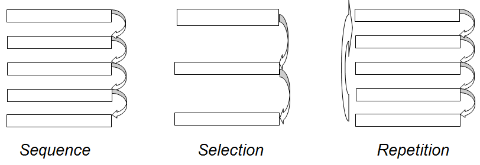

Konstruksi Dasar Algoritma
Sebuah algoritma dapat dibangun dari tiga buah konstruksi atau struktur dasar, yaitu sequence (runtunan), selection (pemilihan), dan repetition (pengulangan).
Runtunan
Sebuah runtunan terdiri dari satu atau lebih instruksi. Tiap instruksi dikerjakan secara berurutan sesuai dengan urutan penulisannya, yakni sebuah instruksi dilaksanakan setelah instruksi sebelumnya selesai dilaksanakan. Urutan instruksi menentukan keadaan akhir algoritma. Bila urutannya diubah, maka hasil akhir mungkin juga berubah.
Contoh algoritma runtunan untuk menghitung keliling dan luas lingkaran :
- Mulai
- Memasukkan nilai jari-jari lingkaran
- Keliling = 2*3.14*jari-jari
- Luas = 3.14*jari-jari*jari-jari
- Tampilkan hasil keliling dan luas
- Selesai
Pemilihan
Adakalanya sebuah instruksi dikerjakan jika kondisi tertentu dipenuhi. Kondisi adalah persyaratan yang dapat bernilai benar atau salah. Dalam pemilihan dikenal beberapa struktur pemilihan, yaitu:
- If-then
- If-then-else
- If-then-else if
Aksi hanya akan dilaksanakan apabila kondisi bernilai benar. Sebaliknya, apabila kondisi bernilai salah, maka aksi tidak akan dilaksanakan.
Struktur Umum:
- aksi 1
Struktur pemilihan if-then hanya memberikan satu pilihan aksi bila kondisi (persyaratan) dipenuhi (bernilai benar), dan tidak memberikan pilihan aksi lain bila kondisi bernilai salah.
Struktur pemilihan ini memberikan dua buah aksi yang akan dikerjakan tergantung pada nilai kondisinya.
Struktur Umum:
- aksi 1
- aksi 2
Else artinya ”kalau tidak”. Bila kondisi benar, aksi 1 yang akan dikerjakan, tetapi kalau tidak, aksi 2 yang akan dikerjakan.
Apabila pilihan aksi yang dilakukan lebih dari dua buah, maka struktur pilihannya menjadi lebih rumit, biasanya untuk pemilihan seperti ini disebut pemilihan bersarang.
Contoh: menentukan bilangan terbesar dari tiga buah bilangan: x, y, z:
-
If x > z then
- Tulis x sebagai bilangan terbesar
- Tulis z sebagai bilangan terbesar
-
If y > z then
- Tulis y sebagai bilangan terbesar
- Tulis z sebagai bilangan terbesar
Kelebihan struktur pemilihan terletak pada kemampuannya yang memungkinakan pemroses mengikuti jalur aksi yang berbeda berdasarkan kondisi yang ada.
Pengulangan
Salah satu kelebihan komputer adalah kemampuannya untuk mengerjakan pekerjaan yang sama berulang kali tanpa mengenal lelah. Ini berbeda dengan manusia yang cepat lelah bila mengerjakan pekerjaan yang sama berulang-ulang. Tidak hanya lelah, tapi juga cepat bosan.
Di algoritma terdapat banyak notasi pengulangan yang bisa digunakan, antara lain repeat N times, for, repeat until dan while
- repeat N times
- for
- repeat until
- while
repeat N times artinya ulangi sebanyak N kali, Struktur pengulangan ini dapat ditulis secara umum dengan pernyataan-pengulangan:
- aksi
Struktur pengulangan yang mirip dengan repeat N times adalah for
- aksi
yang artinya adalah aksi dilakukan sebanyak hitungan cacah pengulangan, yaitu dari 1 sampai N (yaitu sebanyak N kali). Pencacah pengulangan dapat di-set tidak hanya mulai dari 1, tetapi juga dari sembarang nilai yang lain.
repeat-until mempunyai bentuk umum sebagai berikut:
- aksi
yang artinya adalah pengulangan aksi dilakukan hingga kondisi (persyaratan) berhenti terpenuhi.
Struktur pengulangan while memiliki bentuk umum sebagai berikut:
- aksi
yang artinya adalah selama kondisi (persyaratan) pengulangan masih benar maka aksi dikerjakan.